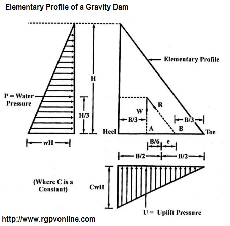
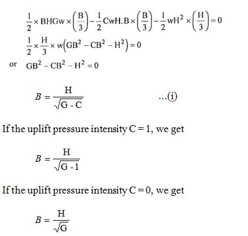
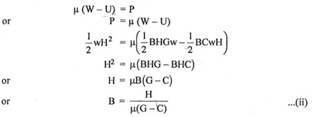
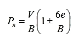

Q.1 What do you mean by the elementary profile of a gravity dam? Derive expressions for determining base width of such a dam based on -
(i) No tension (ii) No sliding.
Answer :
Elementary Profile of a Gravity Dam - An elementary profile of a gravity dam is the theoretical shape of its cross-section when it is subjected to only three main forces, viz. self weight, water pressure, and uplift pressure. Moreover the elementary profile has zero top width and no free board.
The right-angle triangle is the most suitable section for the theoretical profile. For reservoir empty condition, a right angled triangular profile as shown in fig. 1, will provide the maximum possible stabilizing force against overturning, without causing any tension in the base. In this case, the only force is due to the self weight of the dam acting at a distance of B/3 from the upstream face of the dam and hence satisfies the middle third rule.
The elementary profile is hypothetical because an actual gravity dam has some minimum top width and free board, and it will also be subjected to forces other than the three main forces considered in the elementary profile.
Three main forces acting on the elementary profile of a gravity dam are –

(i) Self Weight of the Dam –
Weight of dam (W) = 1/2 × B × H × G × w
where, G = Specific gravity of dam material which is generally taken as 2.4 for concrete
w = Specific weight of water (9.81 kN/m3)
B and H = Base width and height of dam.
The weight (W) acts vertically through the centroid of the triangle at a distance of B/3 from the heel.
(ii) Water Pressure -
p = wH × H
= × wH2, which acts at a height of H/3 from the base.
(iii) Uplift Pressure -
U = × B × CwH
where C is the uplift pressure intensity factor. It indicates that the uplift pressure is CwH at the upstream edge of the base. The uplift pressure (U) acts at a distance of B/3 from the heel in upward direction as shown in fig. 1.
Base Width of Elementary Profile – The base width of the elementary profile is to be determined under following two criteria -
(i) Base Width with No Tension Basis - When reservoir is empty, for no tension to develop, the resultant should act at the inner third point A. For the full reservoir condition, let R be the resultant of all forces acting on the dam, for no tension at the heel, the resultant R must pass through the outer middle third point B as shown in fig. 1. The maximum value of eccentricity (e) is B/6 when the resultant R passes through the point (B).
Taking the moment of all forces about B and equating it to zero, we get W.B/3 - U.B/3 – P.H/3 = 0

(ii) Base Width for No Sliding - For no sliding to occur, the forces causing sliding should not be greater than the forces resisting sliding. In the limiting condition the two forces must be equal and opposite. It is usually assumed that the sliding is resisted by the friction only thus,
μΣV = ΣΗ
where, u is the coefficient of friction.

The minimum base width required for the elementary profile should be greater of the two values obtained from the equations (i) and (ii) However generally equation (i) is used to calculate base width.
Stresses Developed in the Elementary Profile – The normal stresses at the heel and toe of the gravity dam may be expressed as

For the reservoir full conditions, the maximum stress occurs at the toe and the minimum stress at the heel.
For the reservoir empty conditions, the maximum stress and the minimum stress occurs at the heel and toe respectively.